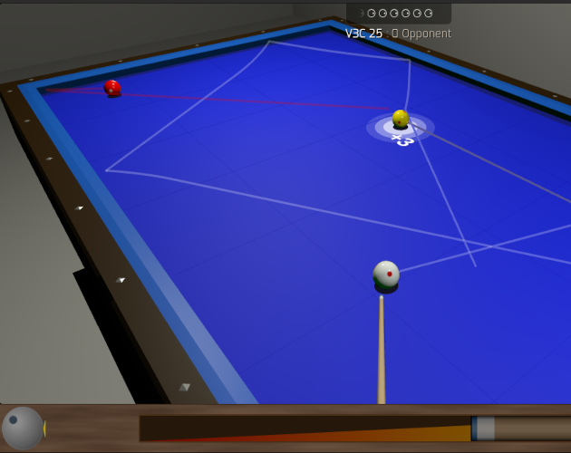
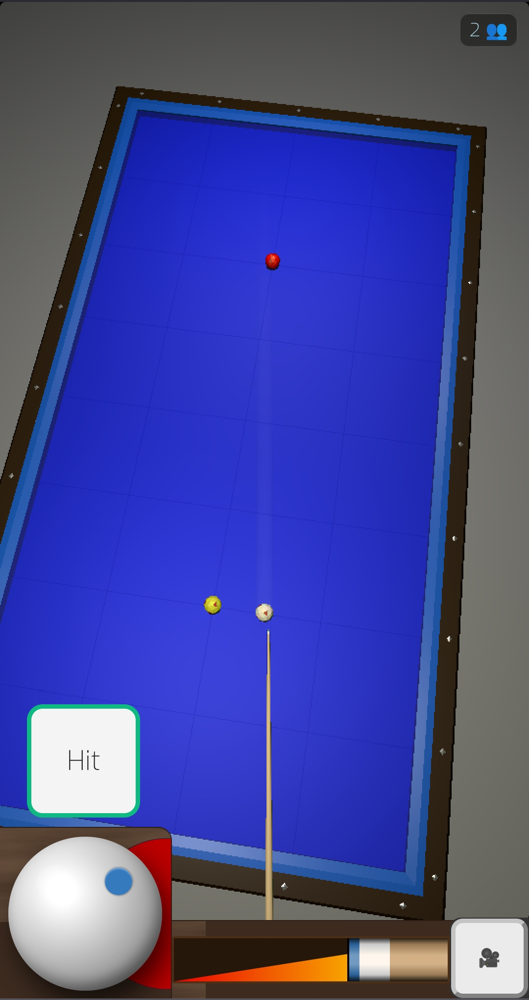
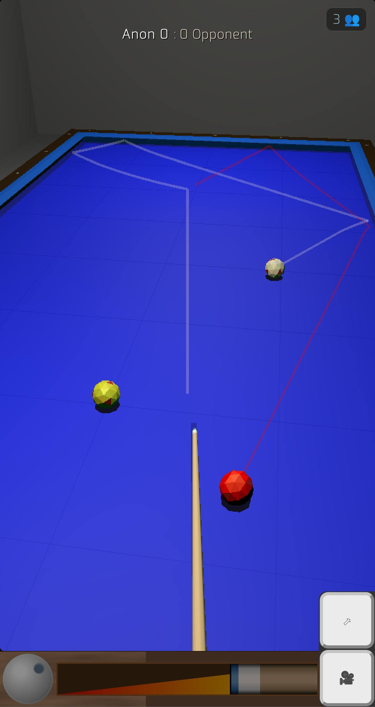
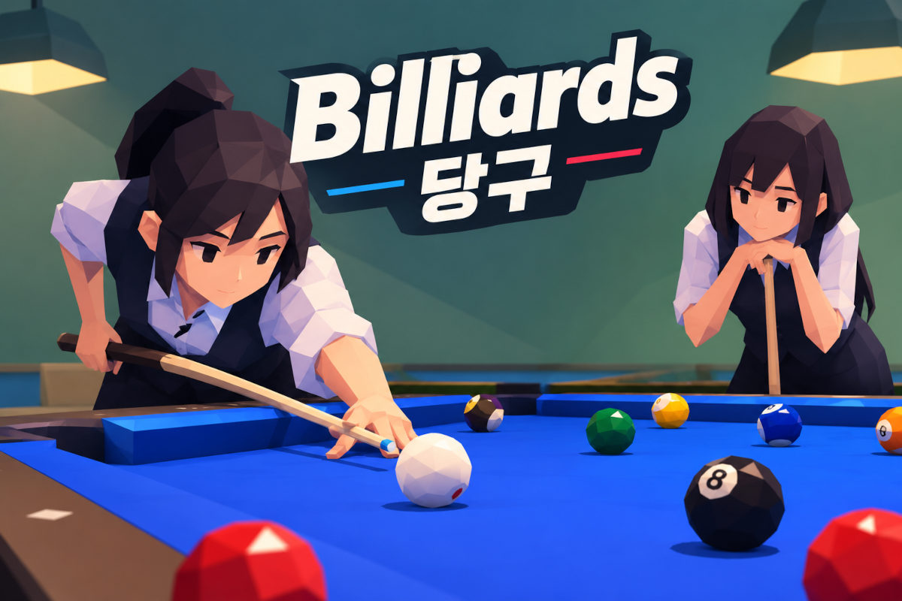

Three-cushion match table, 10ft
The full carom table: 10ft of cloth, three balls and the three-cushion rule enforced. Cue-ball control, cushion-first routes and long positional shots all behave the way they do on a club table.
Free · No download · No registration
Carom billiards with three balls, no pockets and a physics model built for the real game. Spin, cushion rebound and the diamond system behave the way they do on cloth — on a 10ft match table or a small screen.

Start here
Three-cushion — also called 3-cushion carom — is the carom discipline played on a pocketless table with three balls. You score by making the cue ball contact both object balls, with at least three cushion contacts before it reaches the second ball. There is no pot to aim at and nowhere to hide: angle, spin and speed decide everything. This page gives you a full-size table with that rule set enforced, a smaller table for practice, and a physics model that treats cushions and spin as carefully as the real thing.
The game has a deep competitive tradition. The world championship has been held since 1928 under the Union Mondiale de Billard, and three-cushion has been a World Games sport since 2001. Belgium's Raymond Ceulemans won 21 world titles, the Netherlands' Dick Jaspers and Sweden's Torbjörn Blomdahl dominated the modern era, and Vietnam's Bao Phương Vinh became world champion in 2023. You do not need any of that pedigree to start here, but the table will not flatter a careless shot either.
Everything on this page is free and open source: the match table, the practice table, the diamond-system guide, the three-cushion exam, Korean four-ball (sagu), and online play against real people. No installer, no account, no upgrade tier.
Tables
Every table below runs the same physics engine — only the size and the rule set change.
The full carom table: 10ft of cloth, three balls and the three-cushion rule enforced. Cue-ball control, cushion-first routes and long positional shots all behave the way they do on a club table.
A 5ft table with the same rules. Shorter distances make the angles easier to read while you learn the diamond system, and it fits comfortably on a phone screen.
Want a different carom game? Korean four-ball (sagu) is the crowded-table game behind Korea's billiards halls, and libre removes the cushion requirement entirely for basic cue-ball work.
New to carom? Start on the small table to learn the angles, then move to the full-size table for a proper game.
Rules
One point per successful carom, and the table is handed over when you miss. That is the whole game — the difficulty is entirely in the route you choose.
Scoring. The cue ball must contact both object balls, and it must touch at least three cushions before it contacts the second object ball. Contact can be ball first, cushion first or any mixture, and extra cushion contacts do not hurt. A completed carom is one point, and the striker continues until a shot fails to score.
Innings and average. A match is played to an agreed number of points — 50 is common in professional play, short race formats are common online. Your average is points scored divided by innings taken, which is why a three-cushion scoreboard says more about consistency than about one brilliant shot.
Fouls. Failing to complete the carom ends the inning. Pushing through the cue ball, touching a ball with hand or cue, or shooting while balls are still moving are fouls; the rules this simulator uses follow the standard UMB three-cushion rule set. If you want the official wording, the UMB championship rules are published as a PDF.
Why it looks different from pool. There are no pockets, so the cue ball's path after contact matters more than the contact itself. Good players choose the route first — three cushions into a favourable angle — and treat the two object balls as targets at the end of it, not the beginning.
Diamond system
The diamonds along the rails are not decoration: they are the measuring marks for cushion routes. Our guide shows the path from above, and the game lets you play it.
The classic corner-five system gives you a starting number on the cue-ball rail and a target number on the object-ball rail, with the difference telling you where to send the cue ball into the cushions. The five-and-half system handles the angles that the corner system cannot. Both rely on the same thing: knowing where the diamonds are and how a ball leaves a cushion at speed.
When the routes start to make sense, put them under pressure with the three-cushion exam — it grades cue-ball control, cushion routes and diamond-system shots and gives you a level to improve on.
The sport
Carom billiards is a small sport with a serious following. These are the scenes and players that built it.
Raymond Ceulemans of Belgium won 21 world championships; the Netherlands' Dick Jaspers holds the record high run of 34, and Sweden's Torbjörn Blomdahl collected five world titles and more than 40 World Cup wins. Belgium remains a regular stop on the World Cup circuit.
Korea is arguably the sport's largest market by tables and players, and billiards is taught in schools there. Blomdahl has called it the number one country in the world for tables, clubs and players. Korean four-ball (sagu), the local hall game, is also playable here.
Vietnam's Bao Phương Vinh won the 2023 world championship, the first Vietnamese player to do so, and Vietnam has since won the world championship for national teams. Ho Chi Minh City now hosts a World Cup of its own, and the country's halls are full of three-cushion players.
Ankara hosted the 2023 world championship, and Turkish players such as Semih Saygıner and Tayfun Taşdemir are among the sport's most recognisable names. Colombia's Bogotá World Cup and events across Peru and Mexico keep the Latin American scene strong.
Players and tournaments are mentioned here to celebrate three-cushion billiards. This project is not affiliated with, sponsored by or endorsed by any of them.
Play with friends
Open the lobby, see who is online, send a challenge and the match starts. No invite codes, no subscription, no registration.
The online lobby lists every player who is connected right now, along with the table they are playing on. Challenge someone and the game opens on both screens at once. When your opponent leaves, the next challenger is a click away — and if the lobby is quiet, two practice bots are always waiting.
Play three-cushion with friendsPractice and assessment
Pick a shot, play it, get marked. The exam works through a graded series of carom positions so you can see progress instead of guessing at it.
The three-cushion exam starts with basic caroms and cue-ball control, then moves into cushion-first routes, the five-and-half system, diamond-system shots and the reinforced positions that decide close games. Each shot is played on a real table with the same physics as the game, and completion, score and assessment level are tracked as you go.
If you would rather build your own layouts, open practice mode, drag the balls anywhere and replay a shot until the route feels natural. The diamond system guide and three-cushion physics page are there when you want to understand why a shot did what it did.
On the table
Touch aiming, a top-down view for planning the route and a close view along the cue. Same physics, same table, wherever you are.



Why it plays well
Three-cushion exposes every approximation. Running side has to come off the cushion at the angle the spin says it will, or the route is nonsense.
Cushions, throw and spin transfer follow published billiards research, so running side and check side behave like they do on cloth. The maths is documented on the three-cushion physics page.
Mouse or touch, any modern browser. Nothing to install and no app store involved, and the 5ft table is built for small screens.
Every table, the lobby, the diamond guide and the exam are free. No account, no email, no upgrade tier.
The whole WebGL billiards project is public, with a leaderboard to chase your best average on.
FAQ
Yes. This site is a free, open source three-cushion carom simulator that runs in a browser, which makes it a free alternative to 3ball.app and other online carom games. Nothing needs installing, there is no account, and the whole project is open source. You get a full-size match table, a smaller practice table, the diamond-system guide, a scored three-cushion exam and free multiplayer.
Three-cushion is a carom game played with three balls on a pocketless table. To score a point, the cue ball must contact both object balls, and it must touch the cushions at least three times before it reaches the second object ball. The order of ball and cushion contacts is otherwise free, so a shot can start with an object ball, a cushion, or a mix of both. A successful carom scores one point and the player continues until a shot misses, then the opponent plays the table as it lies.
No. There is no download, no app and no registration. The game runs in your browser on desktop and mobile, and you can choose a name in the lobby if you want one to appear on the leaderboard. Nothing is installed and no email address is required.
Yes. Open the lobby, see who is connected, send a challenge and the match opens on both screens. There is no charge and no account. When nobody else is around, two practice bots, ClawBreak and TheFarJaw, are always available for a game.
Use the interactive diamond system guide, which shows the cushion contacts and cue-ball paths for three-cushion routes from above, and then take the free three-cushion exam. The exam grades a series of carom positions covering cue-ball control, cushion routes, the five-and-half system and diamond-system shots, so you can see which part of your game needs work.
Pool and snooker are played on tables with pockets and potted balls are the objective. Three-cushion is carom billiards: the table has no pockets, only three balls are used, and the aim is to make the cue ball contact both object balls after at least three cushion contacts. That makes spin, cushion rebound and positional routes far more important than potting accuracy. There is a separate online snooker page if you want the pocket game.
Yes. Aiming works with touch, there is a top-down camera for planning position and a close aim view along the cue, and the 5ft table is designed for small screens. The whole game is responsive, so the same match plays on a phone, tablet, laptop or desktop without installing anything.
Also worth a look
If you'd like to try a few different takes on online carom, these free options are worth checking out: 3C Arena (browser three-cushion with ranked play), Casual Arena French Billiards, Dongne's 3-Cushion and iPlayer's 3 Cushion Billiards. To follow the real sport, UMB Carom publishes the calendar, rankings and live scoring for World Championships and World Cups, and Wikipedia has the history and rules. For the pocket games, try our free 9-ball pool, 8-ball pool and online snooker.
Free three-cushion billiards, no download, no registration. Play solo, take the exam, or challenge someone right now.